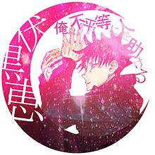

芥見下々
概要
『週刊少年ジャンプ』2018年14号から連載されている漫画作品。作者は芥見下々。
『ジャンプGIGA』2017vol.1～4で連載されていたパイロット版の『東京都立呪術高等専門学校』
（以下『呪術高専』）をベースとして、今作の連載に至った。
『呪術廻戦』は『呪術高専』の1年後の物語であり、登場人物や設定など世界観もそのまま引き継がれており、
『呪術高専』は後に『呪術廻戦』0巻として発売されている。
2020年10月より毎週金曜日深夜1時25分からMBS/TBS系全国28局ネット“スーパーアニメイズム”枠にて放送開始!!
あらすじ
呪い。
辛酸・後悔・恥辱...。
人間の負の感情から生まれる禍々しきその力は、人を死へと導く。
ある強力な「呪物」の封印が解かれたことで、
世界は大きく胎動する。
両親の顔を知らず、祖父に育てられた仙台の高校１年生・虎杖悠仁は、ある日学校で特級呪物「両面宿儺の指」を偶然拾う。その晩、呪術高専東京校１年を名乗る少年・伏黒恵が現れ「人死が出ないうちに宿儺の指を渡せ」と凄むが、既にそれはオカルト研究会の先輩の手に渡っており、辛うじて施されていた封印の護符も剥がされてしまっていた。封印の解かれた宿儺の指を取り込み、新たな力を得ようと学校に「呪い」が集まる中、虎杖は伏黒とともに呪いに取り込まれそうになった先輩を助けるが、伏黒が負傷し一同は窮地に陥る。「呪いは呪いでしか祓えない」という 伏黒の言葉に虎杖は、状況を打開するために猛毒の指を自ら呑み込んだ。本来なら口にした瞬間死亡してもおかしくない代物であったが、幸か不幸か虎杖は宿儺の「器」となる素質を持っていた。学校に集まってきた呪いを退け、宿儺の器となったことで呪術師の討伐対象となってしまった虎杖に、最強の呪術師にして呪術高専東京校１年担任・五条悟は、「この場で処刑されるか」もしくは「宿儺の指20本を全て集め、取り込んでから処刑されるか」という、二つの死に方を提示する。
主な用語
登場人物(人間)
虎杖悠仁
本作の主人公。
宿儺の指を飲み込んでも自我を保てるという、1000年間生まれてこなかった体質の持ち主。
人間離れした身体能力を持ち、両親にもなにか秘密があるようだが、本人は把握していない。
その体質を見込まれ、処分するにできないでいる厄介な呪物「宿儺の指」を取り込めるだけ取り込ませてから虎杖を殺す計画が発案され、
その計画に乗って呪術高専東京校１年に転校してきた。
伏黒恵（フシグロ メグミ）
呪術高専東京校１年。二級呪術師。
「両面宿儺」の回収のため虎杖の高校へ調査に来ていた。
本家ではないが父親(伏黒とうじ)が御三家のひとつ・禪院家の血筋。禪院家相伝の術式「十種影法術」を受け継いでおり
手指でつくる影絵を触媒に式神を作り戦う。身長は175cm。実話系の本を読むことが多い。
五条とは小学校から知ってる。好きな食べ物は生姜に合うもの。嫌いな食べ物はパプリカ。
釘崎野薔薇（クギザキ ノバラ）
呪術高専東京校１年。三級呪術師。
虎杖に遅れて盛岡から４時間かかるド田舎から転校してきた。転校の理由は「排他的な地元に嫌気がさしたから」
金槌と釘を使用する術式「芻霊呪法」を使用する。
身長は160cm。髪は地毛ではなく染めている。暇ができたらとりあえず買い物へ。（呪術師は学生にもお給料が支払われている）
五条悟
呪術高専東京校１年の担任。
日本で4人しかいない特級呪術師のひとり。御三家の一つ・五条家に出身で自他共に認める最強呪術師。
現在の呪術界上層部の腐敗を疎んでおり体制よりも学生を優先する。五条家相伝の術式「無下限呪術」を受け継いでいる。
夜蛾正道（ヤガ マサミチ）
呪術高専東京校学長。
呪霊
両面宿儺（リョウメンスクナ）
術式
十種影法術（トクサノカゲボウジュツ）
芻霊呪法（スウレイジュホウ）
無下限呪術（ムカゲンジュジュツ）
呪具
用語集
両面宿儺
腕が４本、顔が２つある仮想の鬼神。
宿儺の指
特級呪物。全部で20本ある。
呪骸（ジュガイ）
呪いのこもった人形。